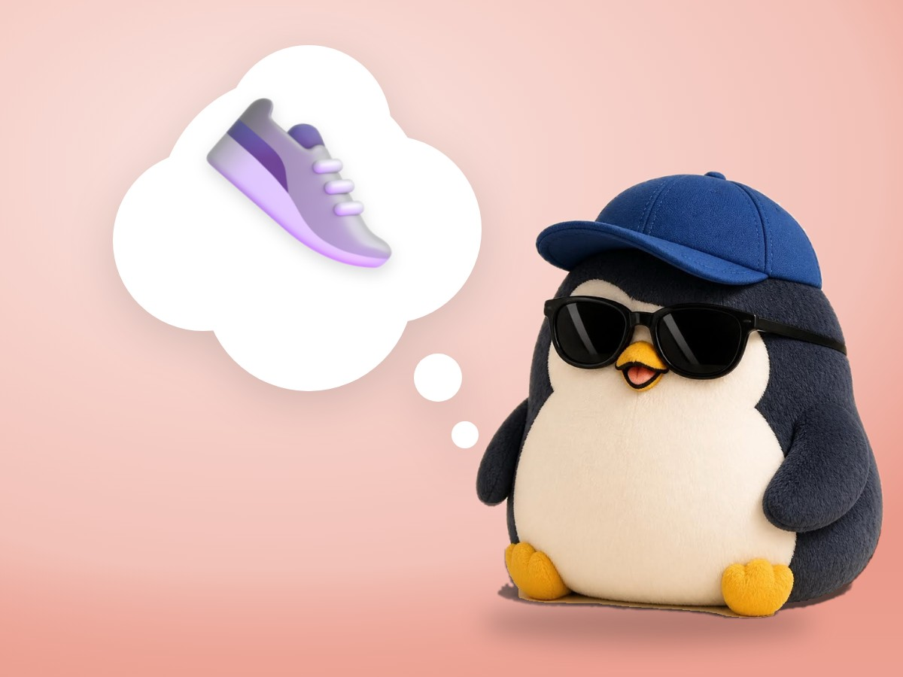

📝 DRAFT · 下書き — まだ本番に出していません · 下書き一覧
🐧 EVERYDAY LIFE⚡ 19 SEC
Too much complaining can make you get used to a bad place 👟

Letting Off Steam
Complaining makes you feel a little better for a while.
Getting Used
But because you feel better, you may get used to a bad place.
Small Shoe
Even if you keep saying "Ouch, ouch" about a shoe that is too small, the shoe stays small.
⚡ TRY IT
The too-small shoe
"My shoe is too small…"
"Ouch, ouch, ouch…"
"Too painful! I can't walk!"
"Phew. Complaining feels a little better."
"It's fine… I'm used to it."
"Wow! My feet are free!"
📅 Days in the small shoe: 1
Walk, complain, walk, complain… What happens?
🎉 You changed it fast. Happy feet!
🎉 Free at last! Complaining made the small shoe OK… for too long.
Change It
How about complaining just a little, and thinking about a way to change the shoe?
📚 I learned this from the Japanese blog "Panda no Ondo".